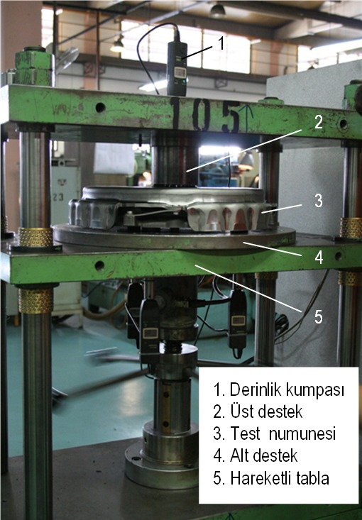
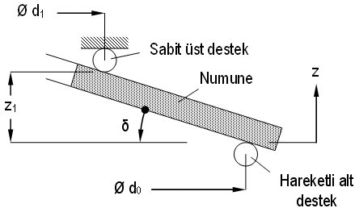
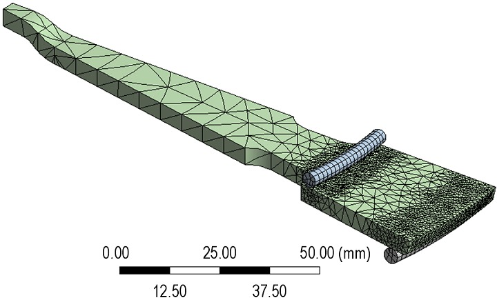
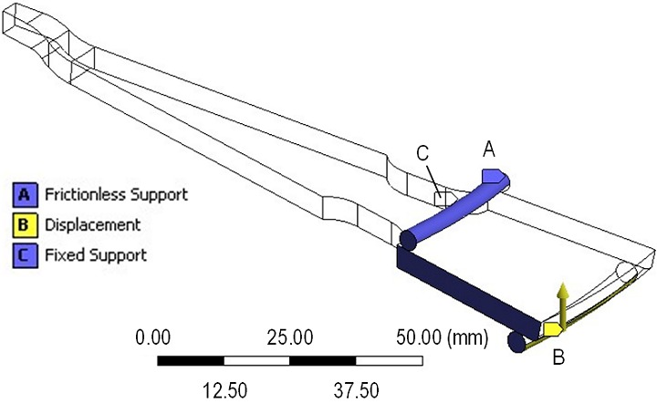
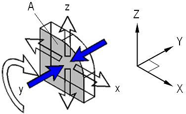
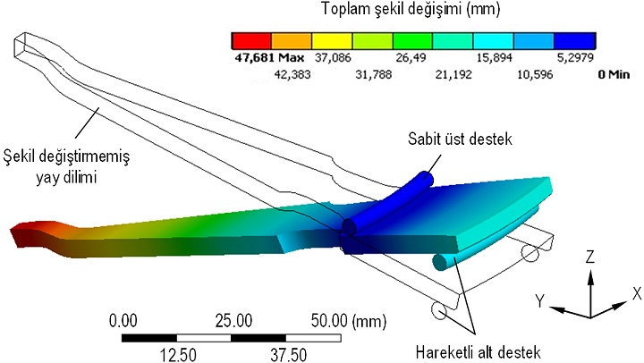
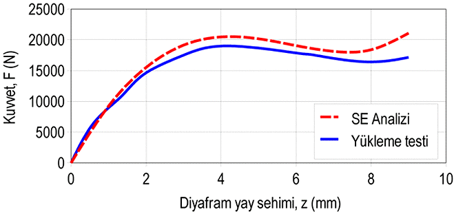
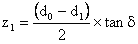
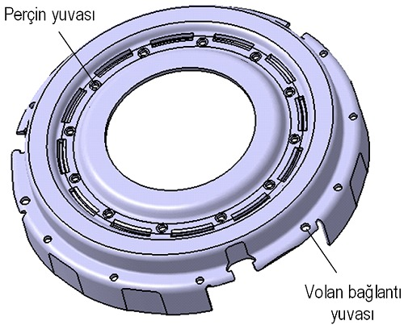
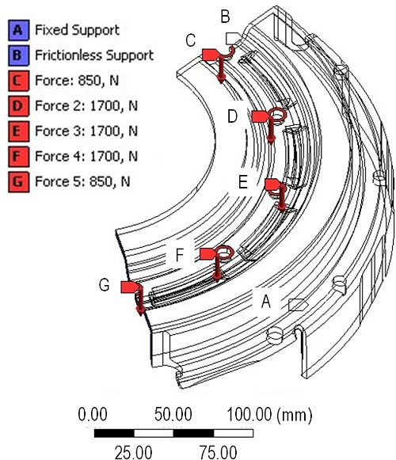

|
Yayýn sehime baðlý baský kuvveti karakteristiði, Þekil 7'de görülen test düzeneðiyle elde edilmiþtir. Bu cihazda, parçanýn yalnýz baþýna ya da kapaða baðlanmýþ durumdaki kuvvet ve þekil deðiþimi ölçümleri yapýlabilmektedir. Prensip þemasý Þekil 8'de verilen yay yükleme testinde diyafram yay mesnet halkasý çapýndan Z ekseninde sabitlenmiþ, parçanýn taban kýsmý, baský plakasýnýn eteðe temas ettiði çaptan, sütunlar üzerinde düþey yönde hareket edebilen alt destek aparatý yardýmýyla yukarýya doðru z= 12 mm kadar esnetilmiþtir. Þekil 7'de 1 numara ile gösterilen elektronik derinlik kumpasý, sehim deðerlerini yüklemeye baðlý olarak göstermektedir. Diyafram yayýn baský plakasýna oturduðu çapta meydana gelen tepki kuvvetleri, hareketli tablanýn altýnda yer alan kuvvet ölçüm cihazý ile ölçülmüþ ve bilgisayara aktarýlmýþtýr. Elde edilen baský kuvveti-sehim karakteristiði, Þekil 13'te sonlu elemanlar analizinden elde edilen karakteristikle birlikte karþýlaþtýrmalý olarak verilmiþtir.

Þekil 7. Kavrama yükleme testi düzeneði

Þekil 8. Yay yükleme testinin prensip þemasý
Diyafram yayýn kuvvet analizi, sonlu elemanlar yöntemini temel alan ANSYS® Workbench V11.0 paket yazýlýmý ile gerçekleþtirilmiþtir. Kavramada kullanýlan diyafram yayýn CATIA® V5R15 paket yazýlýmda hazýrlanmýþ katý modeli Þekil 4'te verilmiþtir. Dairesel simetriye sahip bu parça, çevresel olarak yirmidört eþ dilime bölünebilmektedir. Bu nedenle yayýn tamamýna ait katý modelinin analizde kullanýlmasý yerine, tek dilim üzerinden ve gerekli simetri sýnýr koþullarýnýn tanýmlanmasý ile analiz gerçekleþtirilmiþtir. Böylelikle çok daha az sayýda eleman kullanýlarak zamandan ve bilgisayar sistem kaynak ihtiyacýndan tasarruf edilmiþtir. Yay diliminin sonlu elemanlar modelinde, her biri üçer doðrusal serbestlik derecesine sahip toplam on düðümden oluþan SOLID187 elemaný kullanýlmýþtýr [10]. Modeli oluþturan Þekil 9'da görülen sonlu eleman aðý, 15266 eleman ve 27223 düðüm noktasýný kapsamaktadýr.

Þekil 9. Diyafram yay diliminin sonlu eleman aðý
Diyafram yay, yüksek zorlanmalara uygun, ýslah edilebilir 51CrV4 yay çeliðinden üretilmektedir [11]. Parçanýn konik formu sýcak þekillendirme ile elde edilmekte ve imalat nedeniyle malzemenin analizlerde kullanýlacak mekanik özelliklerinde önemli bir deðiþim meydana gelmemektedir. Bu nedenle sonlu elemanlar analizinde, sac üretici firmadan alýnan iþlem görmemiþ 51CrV4 yay çeliði malzemesinin çekme deneyi sonucu elde edilen ve Tablo 1'de verilen mekanik özellikleri tanýmlanmýþtýr.
Tablo 1. 51CrV4 malzemesinin mekanik özellikleri
Malzeme numarasý |
1.8159 |
Elastisite modülü, E |
189,7 GPa |
Poisson oraný, v |
0,3 |
Yayýn elastik sýnýrlar içinde çalýþmasý öngörüldüðünden malzemenin davranýþý lineer izotropik olarak tanýmlanmýþtýr. Yay dilimi için öngörülen yükleme ve sýnýr koþullarý Þekil 10'da görülmektedir.

Þekil 10. Sýnýr koþullarý ve yükleme
Yay, birbirinin dairesel simetriði olan yirmidört eþ parçadan oluþtuðu için yay diliminin sonlu elemanlar analizinde, parçanýn kesilen yüzeylerinde "Frictionless Support" sýnýr koþulu kullanýlmýþtýr. ANSYS® Workbench V11.0 paket yazýlýmýnda bulunan seçeneklerden biri olan ve Þekil 11'de prensibi görülen bu sýnýr koþulu, seçilen bir A düzlemine dik olan Y doðrultusunda hareketi kýsýtlamakta, bununla birlikte düzleme X ve Z eksenlerinde doðrusal ve XZ düzleminde rotasyonel hareket serbestliði vermektedir. Bu sýnýr koþulu yardýmýyla, yay dilimi bünyesinde ortaya çýkacak iç reaksiyon momenti de simüle edilebilmektedir.

Þekil 11. "Frictionless Support" sýnýr koþulu
Yayýn sonlu elemanlar yöntemiyle gerçekleþtirilen kuvvet analizinde, üretici firma tarafýndan yay test cihazlarýnda uygulanan prosedür modellenmiþtir. Yay, mesnet halkasýný temsil eden üst destek yardýmýyla ve "Fixed Support" sýnýr koþulu kullanýlarak Z yönünde eksenel olarak sabitlenmiþtir. Baský plakasýnýn yaya temas ettiði alt destek çapýndan, ikinci bir destek yardýmýyla, etek bölgesine eksenel doðrultuda kademeli olarak sehim verilmiþ, bu sýrada destek halkasýnda oluþan reaksiyon kuvvetleri okunmuþtur. Bu kuvvetler, mutlak deðer olarak üst desteðe etkiyen kuvvetlere eþittir. Ancak iki kuvvet birbirine ters yönde etkimekte, oluþan moment yay bünyesinde þekil deðiþimine karþý ortaya çýkacak iç reaksiyon momentiyle dengelenmektedir. Alt destekten okunan kuvvetlerin yirmidört katý, halkaya etkiyen toplam tepki kuvvetini vermektedir. Böylelikle diyafram yayýn, kavramanýn tam ayrýlma durumuna denk düþen elastik þekil deðiþimi için perçinlere etkiyen kuvvetler de bulunmuþ olmaktadýr. Hareketli destek üzerinden okunan kuvvetlerin sehime baðlý deðiþimi Þekil 13'te, yükleme testinden elde edilen sonuçlarla karþýlaþtýrýlmýþtýr.

Þekil 12. Yay diliminin elastik þekil deðiþimi
3. Kapakta oluþacak þekil deðiþiminin saptanmasý
3.1. Kavrama kapaðýna etkiyen iþletme kuvvetinin bulunmasý
Kavrama kapaðýna iþletim sýrasýnda etkiyebilecek kuvvetin maksimum deðerini bulmak için diyafram yayýn çalýþma aralýðýnýn belirlenmesi gerekmektedir. Tasarým kriteri olarak, kavramanýn tam ayrýlmasý durumunda kapaðýn perçin yuvalarýnýn bulunduðu çapýnda ortaya çýkacak eksenel þekil deðiþiminin a= 0,3 mm'den daha büyük olmamasý istenmektedir. Kavrama volan ve vites kutusu arasýna, Þekil 2'de görüldüðü gibi yayýn öngerilmeyle düzleþtirilmiþ konumunda (Þekil 5'e göre, H= t; h= 0) monte edilecektir.

Þekil 13. Analiz ve test sonuçlarýnýn karþýlaþtýrýlmasý
Yayýn serbest konumundan düz konuma geçmesi için gereken elastik þekil deðiþimi Þekil 8'de verilen boyutlar üzerinden;
 (2)
þeklinde hesaplanmýþtýr. Burada, eteðin baský diskine dayandýðý ve sehimin uygulandýðý çap d0= 326 mm, mesnet halkasý çapý d1= 270 mm ve yayýn koniklik açýsý = 12º'dir. Bu deðerler yardýmýyla z16 mm olarak bulunur. Kavramanýn çalýþmasý sýrasýnda baský diskinin volandan ayrýlabilmesi için diyafram yay eteðinin montaj konumundan yaklaþýk z2= 2 mm kadar daha eksenel yönde sehim yapmasý öngörülmektedir. Bu durumda yay toplamda, z= 8 mm kadar sehime uðramaktadýr. Bu da, parçanýn 6 mm'lik elastik þekil deðiþimiyle öngerilmeli olarak kapaða monte edileceði ve yaklaþýk z= 6-8 mm sehim aralýðýnda çalýþacaðý anlamýna gelmektedir. Þekil 13'ten, z= 0-8 mm aralýðýndaki en büyük kuvvet sonlu elemanlar analizinde, 4 mm'lik sehim için yaklaþýk F= 20400 N olarak elde edilmiþ, bu kuvvet kavrama kapaðýnýn analizinde maksimum yük olarak kullanýlmýþtýr. Böylece yayýn ve kapaðýn montaj aþamasýnda maruz kalacaðý en yüksek kuvvet de dikkate alýnmýþ olmaktadýr.
Kapaðýn sac malzemeden ve preste soðuk þekillendirilerek üretilmesi öngörülmektedir.
Ýmalat öncesinde izotropik mekanik özellikler gösteren çelik sacýn, soðuk þekillendirme sonrasýnda anizotropik bir yapý kazanmasý ve pekleþmesi beklenir [12, 13] . Bu mekanik özellik deðiþimi parçayý daha rijit hale getirdiðinden, soðuk þekillendirme sonrasý gerilim giderme tavlamasý öngörülmemektedir. Parçanýn tasarým aþamasýnda yürütülen bu çalýþmada, üzerinden çekme deneyi numunesi çýkarýlacak bir prototip bulunmadýðýndan, sonlu elemanlar analizinde parçanýn mekanik özellikleri plastik þekil deðiþimine uðramamýþ sacýn mekanik özelliklerine eþit kabul edilmiþ, çekme dayanýmý ve akma sýnýrý deðerlerinde meydana gelecek artýþ dikkate alýnmamýþtýr. Bu nedenle, kapaðýn yük altýndaki elastik þekil deðiþiminin imalat sýrasýndaki pekleþme nedeniyle, analizden elde edilen deðerlerden daha düþük olmasý beklenmektedir. Ýmalatta kullanýlan sacýn mekanik özellikleri Tablo 2.'de, kimyasal bileþimi ise Tablo 3'te verilmiþtir.
Tablo 2. Kapak malzemesinin mekanik özellikleri
| Malzeme tipi |
Sýcak haddelenmiþ çelik þerit |
Kalite derecesi |
DIN StW 24 |
Malzeme numarasý |
1.0335 |
Standart |
DIN EN 10111 / DIN 1016 |
Çekme dayanýmý, Rm |
341 MPa |
Akma sýnýrý, Rp0,2 |
261 MPa |
Elastisite modülü, E |
190 GPa |
Poisson oraný, v |
0,3 |
Tablo 3. Kapak malzemesinin kimyasal özellikleri
C |
0,08 (%) |
Si |
- |
Mn |
0,40 (%) |
P |
0,030 (%) |
S |
0,030 |
3.2. Kapaðýn gerilme ve þekil deðiþimi analizleri
Kapaðýn iki boyutlu imalat resminden hareketle, CATIA® V5R15 ticari paket yazýlýmnda oluþturulan katý model Þekil 14'te görülmektedir. Kapak, dairesel simetriye sahip üç eþ parçaya bölünebilmektedir. Sonlu elemanlar analizinde, uygun simetri sýnýr koþullarýnýn da yardýmýyla, modelin tamamý yerine bu parçalardan biri kullanýlmýþtýr. Bu þekilde, yay analizinde olduðu gibi, kullanýlan eleman ve düðüm noktasý sayýsý azaltýlmýþ, iþlem için gereken bilgisayar kaynaklarý daha verimli kullanýlarak zamandan tasarruf edilmiþtir. Hazýrlanan katý model parçasý IGES formatýna çevrilerek ANSYS® Workbench V11.0 paketine aktarýlmýþtýr. Analizde kullanýlan model parçasý için öngörülen yükleme ve sýnýr koþullarý Þekil 15'te görülmektedir.

Þekil 14. Kavrama kapaðýnýn katý modeli

Þekil 15. Kapak dilimi için yükleme ve sýnýr koþullarý
Diyafram yayýn kuvvet analizi sonucunda mesnet halkasýnda ortaya çýkan reaksiyon kuvveti, kapak üzerinde perçinlerin oturduðu yuvalara eþit olarak daðýtýlmýþtýr. Kapaðýn tamamýnda 12 adet ve dolayýsýyla her model parçasýnda üç adet tam, iki adet yarým perçin yuvasý bulunmaktadýr. Yay çalýþma aralýðýndaki en büyük yük deðeri olan F= 20400 N reaksiyon kuvveti diyagramýndan seçilip, kapaða etkiyen toplam yük olarak bu yuvalara eþit daðýtýlmýþtýr. Böylece D, E ve F noktalarýna F= 1700 N, C ve G ortak noktalarýna ise bu kuvvetin yarý deðeri olan F= 850 N etki ettirilmiþtir. Analizde, parçanýn dairesel simetri özelliði kullanýldýðýndan kesilme yüzeylerine (B), yay modelinde olduðu gibi "Frictionless Support" simetri sýnýr koþulu atanmýþtýr. Kapaðýn volana civatalarla baðlanan A yüzeyinin hareket serbestliði ise "Fixed Support" sýnýr koþulu kullanýlarak ortadan kaldýrýlmýþtýr. Analizde kapak malzemesinin lineer izotropik özellik taþýdýðý kabul edilmiþ, sonlu elemanlar analizinde malzemenin elastisite modülü E= 190 GPa ve Poisson oraný v= 0,3 olarak dikkate alýnmýþtýr.
|